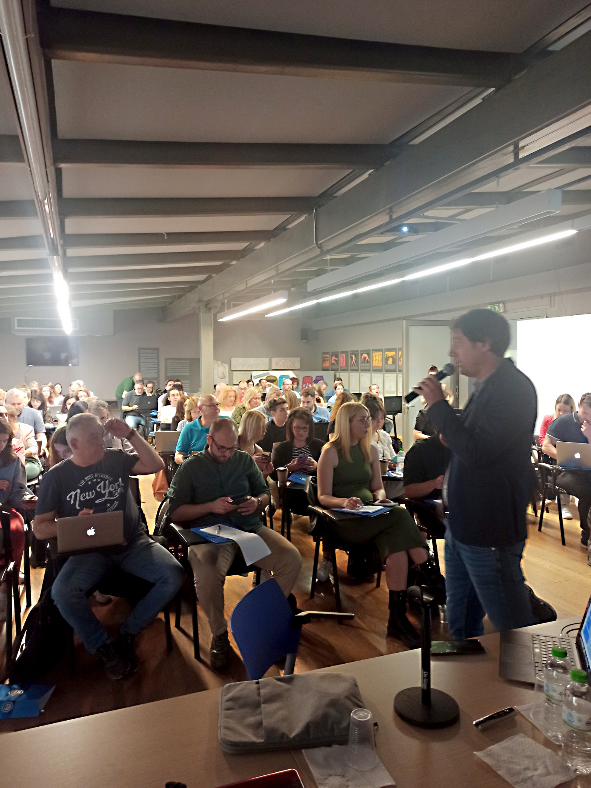
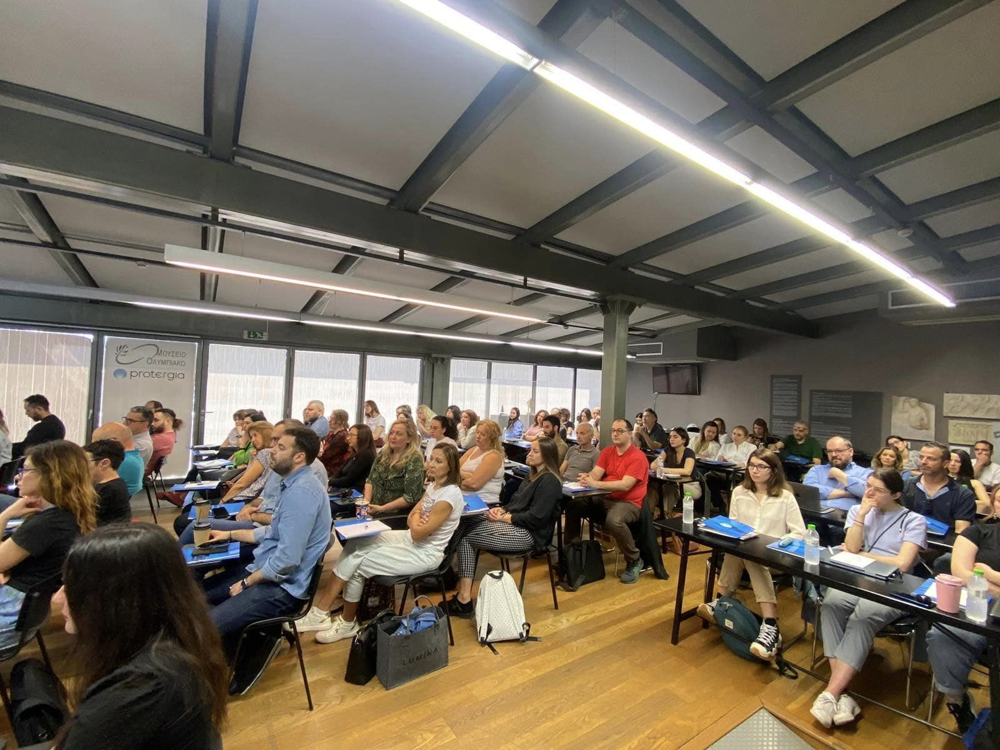
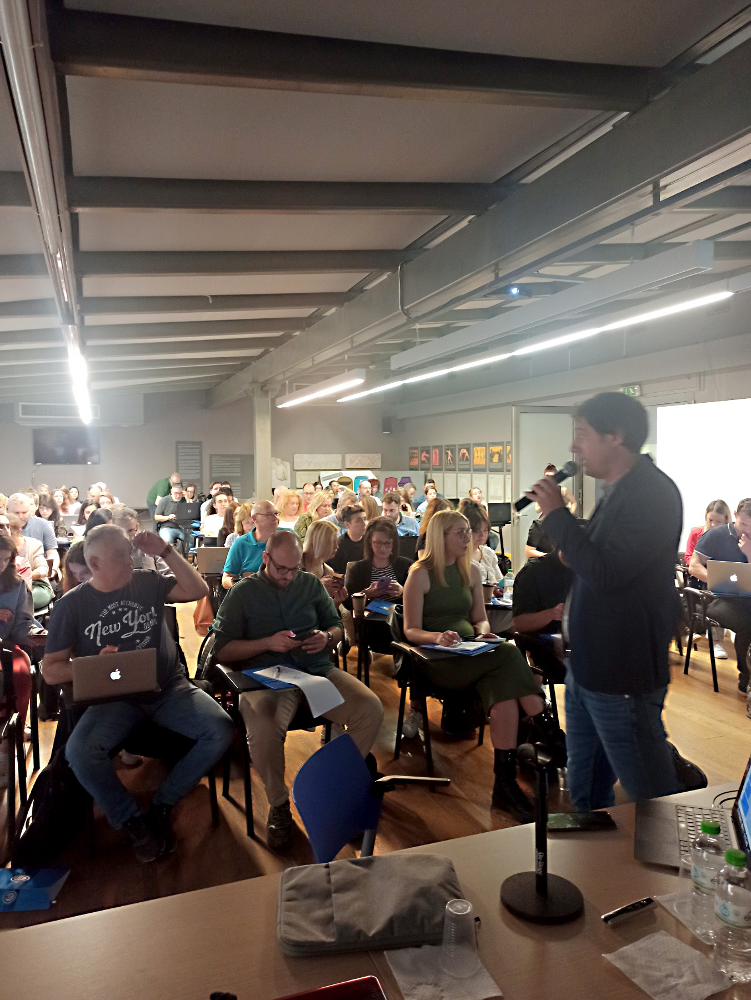
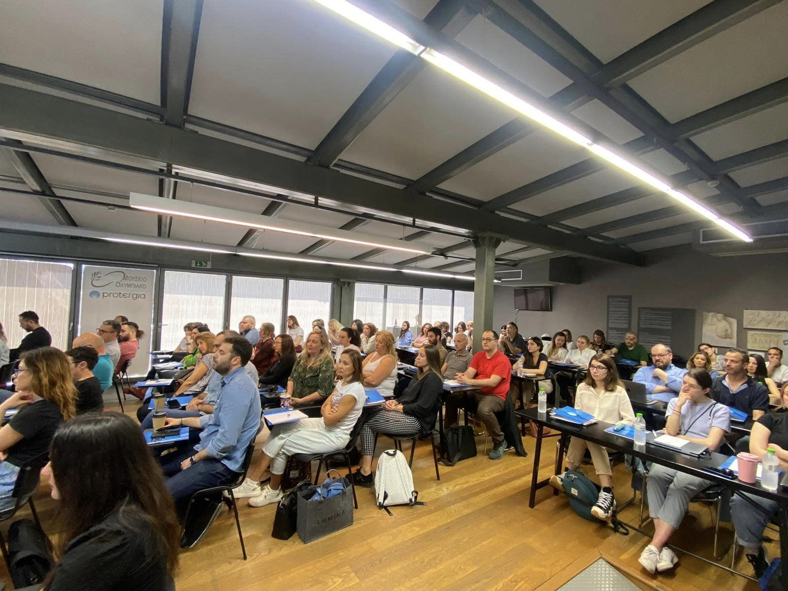

Georgios Bouchouras, PhD
Senior Lecturer in Biomechanics
Metropolitan College, in collaboration with University of East London
Biomechanics | Gait Analysis | Ontology Engineer | Prompt Engineer | AI | Recurrent Neural Networks
Workshop 'Applications of Artificial Intelligence in Education'
Posted on April 30, 2024
 



Today I had the pleasure of being a speaker at the workshop 'Applications of Artificial Intelligence in Education,' organized by the Association of Tutors of Northern Greece.
It was an opportunity to present the interesting topics we are studying at the Intelligent Systems Lab of the University of the Aegean. We discussed how artificial intelligence can transform teaching practices and enhance individual learning. We explored useful tools and programs. Impressive participation with over 100 attendees. Let's join forces to explore and implement innovative solutions that will enhance learning. Congratulations to the association for this initiative.